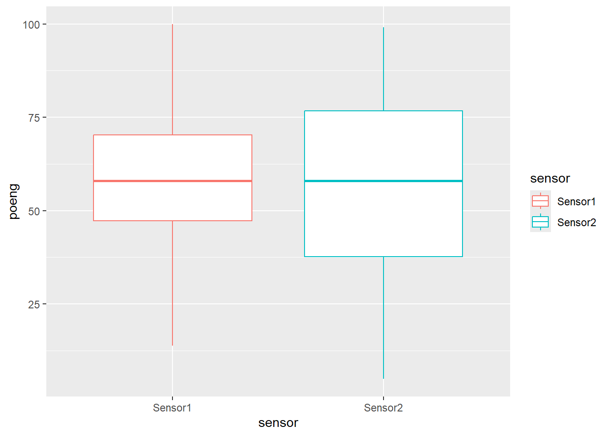
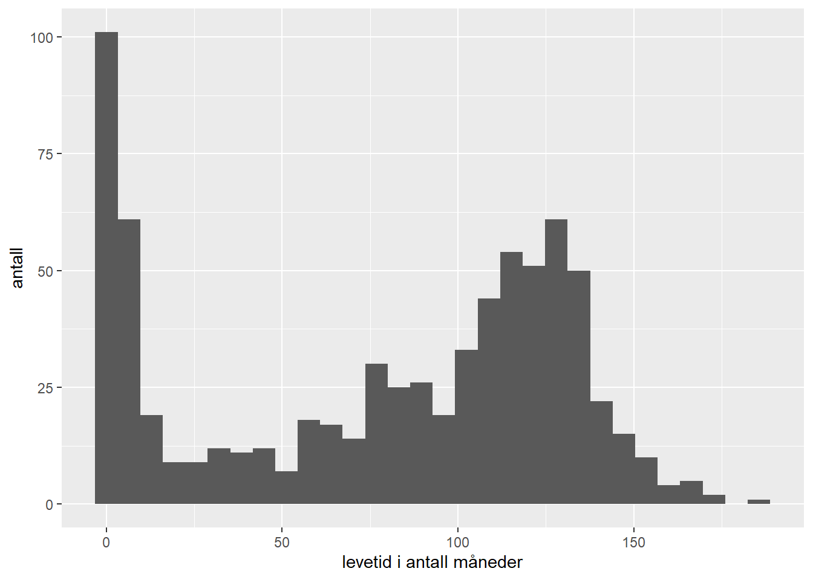
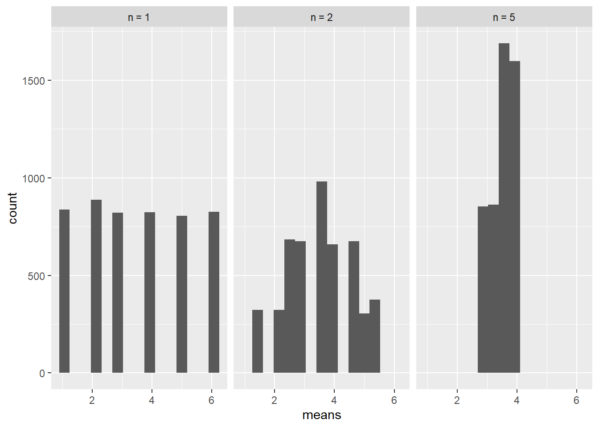

2.3 Oppgaver
2.3.1 Standard oppgaver
- Beskriv kort forskjellen mellom deskriptiv statistikk og statistisk inferens.
Løsning
Beskrivende statistikk bearbeider og presenterer data for å belyse faktiske forhold. Statistisk inferens, også kalt slutningsstatistikk, er å gjøre slutninger om populasjonen basert på det vi observerer i utvalget.
Du skal spille kron og mynt. Motspilleren din er eieren av mynten, og hun påstår at den er rettferdig. Det vil si at om man flipper mynten svært mange ganger vil den gi et likt antall kron som mynt.
- Beskriv et eksperiment som tester denne påstanden.
- Hva er populasjonen i eksperimentet?
- Hva er utvalget?
- Hva er parameteren?
- Hva er estimatoren?
- Beskriv kort hvordan statistisk inferens kan bli brukt til å teste påstanden til motspilleren din.
Løsning
- Kast mynten ett gitt antall ganger, for eksempel 100 ganger. Registrer hvor mange ganger den viser mynt og hvor mange ganger den viser kron.
- Populasjonen er det teoretiske resultatet av å kaste mynten uendelig mange ganger og registrere hvor mange ganger den viser mynt og hvor mange ganger den gir kron.
- Utvalget er antall mynt og kron i eksperimentet.
- Parameteren er andelen mynt (eller kron) i populasjonen.
- Estimatoren er den registrerte andelen mynt (eller kron) i eksperimentet.
- Estimatoren kan brukes til å vurdere om mynten faktisk er rettferdig. I neste modul av kurset skal dere lære om hypotesetesting og om hvilken hypotesetest man kan utføre for å avgjøre om man kan forkaste nullhypotesen om at mynten er rettferdig.
En fabrikant av maskindeler påstår at mindre enn 15% av produktene er defekte. Når 1000 deler ble trukket fra en stor produksjon, var 12% defekte.
- Hva er populasjonen i dette tilfellet?
- Hva er utvalget?
- Hva er parameteren?
- Hva er estimatoren?
- Forklar kort hvordan estimatoren kan bli brukt til å gjøre inferens om parameteren for å undersøke påstanden om at 15% av produktene er defekte.
Løsning
- Populasjonen er alle de aktuelle maskindelene som lages av fabrikanten.
- Utvalget er de 1000 delene som ble trukket fra en stor produksjon.
- Parameteren er andelen defekte maskindeler i alle de aktuelle maskindelene som produseres. 15% er den påståtte parameter.
- Estimatoren er andelen defekte maskindeler i utvalget. 12% er den observerte estimatoren.
- Vi kan estimere at andelen defekte maskindeler i populasjonen er 12%. Ved å bruke statistisk inferens kan vi undersøke om vi har nok statistisk bevis til å avvise påstanden om at den sanne andelen defekte maskindeler er 15%.
Avgjør om de følgende datasettene inneholder forholdsdata, intervalldata, ordinale data eller dikotome og nominale data. Avgjør også hvilke regneoperasjoner som er tillatt.
- Antall mil en gruppe joggere løper hver uke
- Starlønnen til nyutdannede fra masterprogrammet til NHH
- Månedene et selskaps ansatte velger å ta ut ferie
- Bokstavkarakterene til studentene i MET4
- De daglige aksjeprisene til Tesla
- Klesstørrelser (S, M, L)
- Antallet Toyota som er importert månedlig til USA de siste 5 årene
- Stillingene i Kjernestyret i NHHS (Leder, Prosjektansvarlig, Internansvarlig osv)
Løsning
- Intervalldata: =, ≠, <, >, +, -
- Intervalldata: =, ≠, <, >, +, -
- Nominale data: =, ≠
- Ordinale data: =, ≠, <, >
- Intervalldata: =, ≠, <, >, +, -
- Ordinale data: =, ≠, <, >
- Intervalldata: =, ≠, <, >, +, -
- Nominale data: =, ≠
- Skattebetalere som fyller ut egenmeldingen sin blir spurt de følgende spørsmålene. Hvilken type data utgjør svarene og hvilke regneoperasjoner er tillatt?
- Er det første gang du fyller ut egenmeldingen din?
- Hvor lang tid brukte du på å fylle ut egenmeldingen?
- Hvor enkelt/vanskelig var det å fylle ut egenmeldingen? (Veldig enkelt, nokså enkelt, hverken enkelt eller vanskelig, nokså vanskelig, veldig vanskelig)
Løsning
- Nominale data: =, ≠
- Intervalldata: =, ≠, <, >, +, -
- Ordinale data: =, ≠, <, >
- Du får oppgitt at gjennomsnittlig startlønn for NHH studenter etter endt utdanning er 560 000kr. Median startlønnen er 520 000kr. Hva forteller disse tallene deg?
Løsning
Selv om den gjennomsnittlige startlønnen er 560 000kr, så får halvparten av arbeidstakerne 520 000kr eller mindre. Det forteller også at det er noen arbeidstakere som drar gjennomsnittet opp.
- En videregående skole rapporterer at gjennomsnittsfraværet i antall dager i løpet av ett skoleår er 10 dager. Medianen er 3,5 dager. Hva forteller de to målene oss, og hvilke av de to beskriver best fraværet? Hvorfor?
Løsning
Det gjennomsnittlige fraværet er høyere enn medianen. Dette forteller oss at noen elever har høyt fravær som drar gjennomsnittet opp. Disse elevene er ikke representative for det store flertallet. Halvparten av elevene har 3.5 eller mindre dagers fravær. Derfor er medianen et mer robust sentermål, som ikke blir påvirket av store uteliggere.
- Du skal ta en språktest før utveksling og kan velge mellom to ulike språkkurs som skal forberede deg til testen. Begge kursene har rapportert kvartilene til testresultatene oppgitt i antall poeng studentene deres fikk på testene:
| Kvartil | Kurs nummer 1 | Kurs nummer 2 |
|---|---|---|
| Første kvartil | 230 | 225 |
| Andre kvartil | 240 | 235 |
| Tredje kvartil | 250 | 270 |
Hvordan tolker du kvartilene og hvilket kurs ville du ha valgt?
Løsning
Kvartilene kan fortelle oss noe om nivået og variasjonen i poengsummene til studentene som har tatt de to kursene. Vi ser at kurs nummer 1 har en symmetrisk fordeling med en median som er høyere enn kurs nummer 2. På en annen side har poengfordelingen til kurs nummer 2 en lengre høyre hale hvor tredje kvantilen tilsier at hele 25 % vil få 270 poeng eller mer. Det tilsvarende tallet for kurs nummer én er 250. Samlet sett er det kanskje “tryggere” med kurs nummer 1, mens det potensielle læringsutbytte har “større tak” i kurs nummer to.
- MET4 ble et år rettet av to sensorer og et boxplot av poengene de ga sine respektive kandidater var som følger:

Hva kan du si karakterfordelingen til de to sensorene?
Løsning
De to sensorene har begge en median rundt 60 poeng, så halvparten av alle studenter får under 60 poeng og den andre halvdelen får over 60 poeng. Men Sensor 2 har større spredning i sine poeng og vil følgelig fordele studentene ut mer på karakterskalaen sammenlignet med Sensor 1.
- Du er kvalitetsansvarlig for et produkt og samler inn data på levetiden i måneder til produktet. Et histogram over disse dataene ser ut som følger:

Hva sier histogrammet deg om produktet?
Løsning
Her ser vi en slags badekar-formet fordeling som ofte går igjen for levetiden til produkter. En rekke produkter går i stykker de første månedene. Dette kan være pga av produksjonsfeil som da slår ut tidlig i bruksperioden. Resten av produktene har en mer normalfordelt levetid med et gjennomsnitt rundt 120 måneder.
- Kovariansen til to variabler fra et utvalg har blitt beregnet til -150. Videre får du vite at empirisk standardavviket til den ene variabelen er 12 og 16 for den andre. Regn ut (utvalgs-) korrelasjonskoeffisienten \(r\) og bruk denne til å beskrive sammenhengen mellom variablene.
Løsning
Utvalgs korrelasjonskoeffisient er definert som utvalgskovariansen mellom to variabler delt på de empiriske standardavvikene til variablene.
\[r=s_{xy}/(s_x s_y )=-150/(16\cdot12)=-0,7813\]
Korrelasjonskoeffisienten er alltid mellom -1 og 1 og måler graden av lineær sammenheng mellom variablene. Når korrelasjonskoeffisienten er -1 er det en perfekt negativ lineær sammenheng, og når den er 1 vil det si at det er en perfekt positiv lineær sammenheng mellom variablene. Når korrelasjonskoeffisienten er 0 vil det si at ikke er noen lineær sammenheng mellom variablene, men vi kan allikevel ikke si at de er uavhengige. Korrelasjonskoeffisienten -0,78 indikerer en moderat til sterk negativ lineær sammenheng mellom variablene.
- Betrakt spredningsplottene for datasett a-d under, og par hvert datasett med en av de følgende korrelasjonene:
\[r_1 = -0.37,\quad r_2 = 0.81,\quad r_3 = -0.02,\quad r_4 = -0.96 \]
Løsning
Datasett a: \(r_2 = 0.81\), Datasett b: \(r_1 = -0.37\), Dasett c: \(r_4 = -0.96\), Datasett d: \(r_3 = -0.02\)
Datasett d er et eksempel på at korrelasjonen mellom to variabler kan være svært nær 0, selv om det er en tydelig (ikke-lineær) sammenheng mellom dem. Det som skjer når vi regner ut \(r\) i dette tilfellet er at den negative avhengigheten vi ser til venstre i figuren kanselleres av den positive avhengigheten til høyre i figuren.
- En normalfordelt populasjon har gjennomsnitt 40 og standardavvik 12.
- Hva sier sentralgrenseteoremet om gjennomsnittet av et utvalg på 100 observasjoner fra denne populasjonen?
- Dersom populasjonen ikke var normalfordelt, hvordan endrer dette svaret ditt i a?
Løsning
- Dersom populasjonen er normalfordelt så vil også gjennomsnittet av et utvalg av populasjonen være normalfordelt. Gjennomsnittet vil ha forventning \(40\) og ha standardavvik \(12/\sqrt{100} = 1.2\).
- Sentralgrenseteoremet sier at fordelingen til gjennomsnittet vil for alle praktiske formål nærme seg normalfordelingen når antall observasjoner øker, uavhengig av fordelingen til populasjonen. Dette endrer altså ikke konklusjonen om fordelingen til utvalget.
- La \(X_1, X_2,\dots X_n\) være utfallet av en rekke kast med en tilfeldig terning.
- Hva er \(P(X_1 = 1)\) og \(P(X_1 = 6)\)?
- Hva er \(P(\overline{X} = 1)\) og \(P(\overline{X} = 6)\) dersom \(n = 2\)?
- Hva er \(P(\overline{X} = 1)\) og \(P(\overline{X} = 6)\) dersom \(n = 5\)?
Løsning
- \(P(X_1 = 1) = P(X_2 = 6) = 1/6\)
- Det er bare en måte at gjennomsnittet av to kast kan bli \(1\) og det er at begge kastene blir \(1\): \(P(\overline{X} = 1) = P(X_1 = 1, X_2 = 1) = P(X_1 = 1)P(X_2 = 1) = 1/36\), og tilsvarende for \(P(\overline{X} = 6)\).
- Det er bare en måte at gjennomsnittet av 5 kast kan bli \(1\) og det er at alle fem kastene blir \(1\):\(P(\overline{X} = 1) = P(X_1 = 1)P(X_2 = 1)P(X_3 = 1)P(X_4 = 1)P(X_5 = 1) = 0.00013\), og tilsvarende for \(P(\overline{X} = 6)\).
Denne oppgaven illustrerer hvordan gjennomsnittet, uavhengig av fordelingen til \(X\) som i dette tilfellet er uniformt fordelt på \({1,2,3,4,5,6}\), er normalfordelt \(\overline{X}\sim N(\mu, \sigma^2/n)\) og beveger seg mot forventningen til \(X\) (som i dette tilfellet er \(\mu = 3.5\)). Det at variansen til gjennomsnittet \(\sigma^2/n\) blir mindre når \(n\) øker ser vi er svært logisk her: Det er værre for gjennomsnittet til terningkastene å oppnå “ekstreme” verdier som \(\overline{X} = 1\) eller \(\overline{X} = 6\) siden dette innebærer at alle kastene må enten være 1 eller 6. Derimot er det en hel rekke kombinasjoner av kast som gir et gjennomsnitt nær \(3.5\), så slike verdier av gjennomsnittet er mye mer sannsynlig.
Under ser du et histogram over gjennomsnittene dersom vi gjentar terningkasteksperimentet med henholdsvis \(n=1,2, 5\) kast 2000 ganger. Allerede for \(n=5\) ser vi at de fleste gjennomsnitt ligger nær det sanne gjennomsnittet på 3.5.

- La \(\hat{p}=X/n\) være den estimerte suksessannsynligheten i et binomisk eksperiment \(X\) med \(n=300\) forsøk og (populasjons) suksessannsynlighet \(p\).
- Hva er sannsynligheten for at \(\hat{p}\) er høyere enn 60% dersom \(p = 0.5\)?
- Gjenta oppgave a med \(p = 0.55\).
- Gjenta oppgave a med \(p = 0.60\).
Løsning
Her bruker vi sentralgrenseteoremet som sier at \(\hat{p}\sim N(p, p(1-p))\):
- \[P(\hat{p} > 0.60) = P\left(\frac{\hat{p} - p}{\sqrt{p(1 - p)/n}} > \frac{0.60 - 0.5}{\sqrt{0.5(1 - 0.5)/300}}\right) = P(Z > 3.46)\approx 0\].
- \[\begin{equation*} \begin{split} P(\hat{p} > 0.60) &= P\left(\frac{\hat{p} - p}{\sqrt{p(1 - p)/n}} > \frac{0.60 - 0.55}{\sqrt{0.55(1 - 0.55)/300}}\right)\\ &= P(Z > 1.74)= 1 - P(Z < 1.74) = 1 - 0.9591 = 0.0409. \end{split} \end{equation*}\]
- \[\begin{equation*} \begin{split} P(\hat{p} > 0.60) &= P\left(\frac{\hat{p} - p}{\sqrt{p(1 - p)/n}} > \frac{0.60 - 0.60}{\sqrt{0.60(1 - 0.60)/300}}\right)\\ &= P(Z > 0)= 0.5\quad\text{(p.g.a. $Z$'s symmetri rundt 0)}. \end{split} \end{equation*}\]
Vi ser at for \(n=300\) vil \(\hat{p}\) sin normalfordeling være svært konsentrert rundt \(p\) (variansen er \(p(1-p)/n\)) og at en overstigelse på 0.05 eller mer fra den sanne suksessannsynligheten (som i oppgave a.) er svært usannsynlig.
- Anta at vi har to normalfordelte populasjoner hvor observasjoner fra populasjon 1 følger en \(N(40, 6^2)\) og observasjoner fra populasjon 2 følger en \(N(38, 8^2)\). Dersom man trekker 25 tilfeldige observasjoner fra hver populasjon, hva er sannsynligheten for at gjennomsnittet til trekningen fra populasjon 1 er større enn gjennomsnittet til trekningen fra populasjon 2?
Løsning
Vi vet da at \(\overline{X}_1 - \overline{X}_2 > 0\) og utnytter at denne størrelsen er normalfordelt: \[\begin{equation*} \begin{split} P(\overline{X}_1 - \overline{X}_2 > 0) &= P\left(\frac{\overline{X}_1 - \overline{X}_2 - (40 - 38)}{\sqrt{\frac{6^2}{25} + \frac{8^2}{25}}} > \frac{0 - (40 - 38)}{\sqrt{\frac{6^2}{25} + \frac{8^2}{25}}} \right)\\ &= P(Z > -1) = 1 - P(Z < -1) = 1 - 0.1587 = 0.8413 \end{split} \end{equation*}\]
- Produsenten av en kaviar forteller deg at hver tube er reklamert til å veie 65 gram, men at maskinen som produserer kaviaren gir en vekt som er en normalfordelt med gjennomsnitt lik 65,5 gram og standardavvik 3.6 gram. La oss si at du trekker et tilfeldig utvalg av 40 tuber for å undersøke denne påstanden og at det tilfeldige utvalget har en gjennomsnittlig vekt lavere enn 64.
- Hva er sannsynligheten for dette utfallet?
- Kommenter påstanden til produsenten.
Løsning
- \[P(\overline{X} < 64) = P\left(\frac{\overline{X} - 65.5}{3.6/\sqrt{40}} < \frac{64 - 65.5}{3.6/\sqrt{40}}\right) = P(Z < - 2.63) = 0.004\]
- Det er svært usannsynlig at vi observerer et gjennomsnitt mindre enn 64 dersom det er sant at maskinen produserer tuber som er normalfordelt med gjennomsnitt 65.5 og standardavvik 3.6. Så påstanden er nok feil. Enten produserer maskinen vekter som er mindre, eller så er standardavviket større.
- En selger av robotgressklippere påstår at bare 4% av produktene må på service innen det første året etter installasjon. Du skal undersøke om påstanden stemmer og spør et tilfeldig utvalg av 100 husholdninger som har kjøpt robotgressklippere om de hadde den på service det første året.
- Hva vil du si om selgerens påstand dersom mer enn 6% svarer at de har hatt behov for service?
- Anta nå at du istedet spurte 400 hustander. Hva vil du si om selgerens påstand dersom mer enn 6% svarer at de har hatt behov for service?
Løsning
- Da har vi altså en estimert service sannsynlighet på \(\hat{p} = 0.06\) eller mer. For å finne ut om dette avviket fra 0.04 skyldes naturlig variasjon eller om den faktiske service raten er større enn 0.04 regner vi ut sannsynligheten for dette utfallet:
\[\begin{equation*} \begin{split} P(\hat{p}>0.06) &= P\left(\frac{\hat{p} - 0.04}{\sqrt{0.04(1-0.04)/100}}> \frac{0.06 - 0.04}{\sqrt{0.04(1-0.04)/100}}\right)\\ &= P(Z > 1.02) = 1 - P(Z < 1.02) = 1 - 0.8561 = 0.1539 \end{split} \end{equation*}\]
Det er altså ikke så usannsynlig at \(\hat{p} = 0.06\) eller mer. Vi kan se for oss at vi gjentar den samme spørreundersøkelsen mange ganger. Da kan vi forvente at rundt 15 % av undersøkelsene gi en \(\hat{p} = 0.06\) ved ren tilfeldighet selv om populasjonsverdien er \(p=0.04\). Selgerens påstand er ikke urimelig ved et slikt resultat.
- Sannsynligheten for et slikt utfall er da \[\begin{equation*} \begin{split} P(\hat{p}>0.06) &= P\left(\frac{\hat{p} - 0.04}{\sqrt{0.04(1-0.04)/300}}> \frac{0.06 - 0.04}{\sqrt{0.04(1-0.04)/300}}\right)\\ &= P(Z > 2.04) = 1 - P(Z < 2.04) = 1 - 0.9793 = 0.02 \end{split} \end{equation*}\]
Nå har vi spurt flere husstander og vi ser at den samme estimerte service sannsynligheten (6 %) nå er mye mer usannsynlig å få dersom det faktisk er slik at bare 4 % trenger service. Selgerens påstand ville altså vært mer tvilsom ved et slik resultat.
- Forventningsrette estimatorer.
- Hva vil det si at en estimator er forventningsrett?
- Vis at hvis \(X_1, X_2,\dots X_n\) er observasjoner fra en populasjon der \(E(X_i) = \mu\) så er gjennomsnittet \(\overline{X}\) en forventningsrett estimator av \(\mu\).
- Vis at hvis \(X\) er et binomisk forsøk med \(n\) forsøk og suksessannsynlighet \(p\) så er \(\hat{p} = X/n\) en forventningsett estimator av \(p\).
Løsning
- Hvis \(\hat{\theta}\) er en estimator av \(\theta\) så er \(\hat{\theta}\) en forventningsrett estimator dersom \(E(\hat{\theta}) = \theta\).
- \[\begin{equation*} \begin{split} E(\overline{X}) &= E\left(\frac{1}{n}(X_1 + X_2 + .. + X_n)\right) = \frac{1}{n}(E(X_1) + E(X_2) + ... + E(X_n))\\ &= \frac{1}{n}(\mu + \mu + ... + \mu) = \frac{1}{n}\cdot n\mu = \mu \end{split} \end{equation*}\]
- Vi husker at en binomisk variabel \(X\) har forventning \(np\). Altså er \[E\left(\frac{X}{n}\right) = \frac{1}{n}E(X) = \frac{1}{n}\cdot np = p\]
- Konsistente estimatorer.
- Hva vil det si at en estimator er konsistent?
- Vis at hvis \(X_1, X_2,\dots X_n\) er observasjoner fra en populasjon der \(\text{Var}(X_i) = \sigma^2\) så er \(\text{Var}(\overline{X}) = \sigma^2/n\). Bruk dette resultatet sammen med resultatet i 19 b til å forklare at \(\overline{X}\) er en konsistent estimator av \(\mu\).
- Vis at hvis \(X\) er et binomisk forsøk med \(n\) forsøk og suksessannsynlighet \(p\) så er \(\text{Var}(\hat{p}) = p(1-p)/n\). Bruk dette resultatet sammen med resultatet fra 19 c til å forklare at \(\hat{p}\) er en konsistent estimator av \(p\).
Løsning
- En estimator er konsistent hvis forskjellen mellom estimatoren og parameteren blir mindre når størrelsen på utvalget øker.
- \[\begin{equation*} \begin{split} \text{Var}(\overline{X}) &= \text{Var}\left(\frac{1}{n}(X_1 + X_2 + .. + X_n)\right) = \left(\frac{1}{n}\right)^2(\text{Var}(X_1) + \text{Var}(X_2) + \dots + \text{Var}(X_n))\\ &= \left(\frac{1}{n}\right)^2(\sigma^2 + \sigma^2 + ... + \sigma^2) = \left(\frac{1}{n}\right)^2\cdot n\sigma^2 = \frac{\sigma^2}{n} \end{split} \end{equation*}\] Vi vet fra før at \(E(\overline{X}) = \mu\). Vi ser av utrykket over at variansen til \(\overline{X}\) avtar når \(n\) øker altså vil forskjellen mellom \(\overline{X}\) og \(\mu\) bli mindre jo større utvalg vi får.
- Vi husker at en binomisk variabel har varians \(\text{Var}(X) = np(1 - p)\). Altså er \[\text{Var}(\hat{p}) = \text{Var}\left(\frac{X}{n}\right) = \left(\frac{1}{n}\right)^2 \cdot\text{Var}(X) = \left(\frac{1}{n}\right)^2\cdot np(1 - p) = \frac{p(1 - p)}{n}\] Igjen ser vi at variansen avtar når \(n\) øker altså vil forskjellen mellom \(\hat{p}\) og \(p\) bli mindre jo større utvalg vi får.
2.3.2 Nøtter
Nøtt 1. Korrelasjon er enten knyttet til et bestemt utvalg, eller en populasjon/modell, men vi sier sjelden “utvalgskorrelasjon” eller “populasjonskorrelasjon” og vi må ofte bare forstå dette ut fra situasjonen eller notasjonen (\(r\) versus \(\rho\)). Men utvalgskorrelasjonen
\[r = s_{xy}/(s_xs_y)=\frac{\frac{1}{n-1}\sum_{i = 1}^n(x_i - \overline{x})(y_i - \overline{y})}{\sqrt{\frac{1}{n-1}\sum_{i = 1}^n(x_i - \overline{x})^2\frac{1}{n-1}\sum_{i = 1}^n(y_i - \overline{y})^2}}\]
et altså en estimator av populasjonskorrelasjonen
\[\rho = \frac{\text{cov}(X,Y)}{\sigma_x\sigma_y} = \frac{E\left[(X - E(X))(Y - E(Y))\right]}{\sigma_x\sigma_y}\].
Det betyr i praksis at \(r\) kommer med en usikkerhet siden den er basert på data. Det kan vises at dersom den simultane fordelingen til \(X\) og \(Y\) er en såkalt bivariat normalfordeling så vil vi for store utvalg ha at samplingfordelingen til \(r\) er tilnærmet normalfordelt med forventning \(\rho\) og standardavvik \(\frac{(1 - \rho^2)}{\sqrt{n}}\):
\[r\sim N\left(\rho, \frac{(1 - \rho^2)^2}{n}\right)\]
Anta at \(X\) og \(Y\) er bivariat normalfordelt.
Forklar at \(r\) er en konsistent estimator av \(\rho\).
Hva kjennetegner populasjoner hvor \(\rho\) kan estimeres med stor sikkerhet ved hjelp av \(r\) fra et utvalg?
Beskriv en test av \(H_0: \rho = 0\), mot \(H_1: \rho \neq 0\).
Løsning
- Vi ser at når \(n\) blir stor går standardavviket til \(r\) mot null, og \(r\) vil derfor nærme seg den sanne korrelasjonen \(\rho\) i populasjonen.
- Vi ser også at standardavviket til \(r\) er mindre jo nærmere \(rho\) er \(\pm 1\). Utregninger av \(r\) basert på utvalg fra populasjoner med sterk positiv eller negativ lineær avhengighet (\(\rho\) nær \(\pm 1\)) kommer derfor med mindre usikkerhet.
- En test observator som vil være tilnærmet normalfordelt er da:
\[Z^* = \frac{r - 0}{\frac{(1 - r^2)}{\sqrt{n}}}\] og ved et \(5\%\) signifikansnivå forkaster vi \(H_0\) dersom \(|Z^*|>1.96\). Merk at sammenlignet med det sanne standardavviket har vi her erstattet \(\rho\) med \(r\). Dette er litt som når vi erstatter \(\sigma\) med \(s\) i den vanlige \(Z\) observatoren (\(T\) observatoren). Pga av sentralgrenseteoremet går dette fint for store utvalg. Obs: Det kommer mer om hypotesetesting i neste modul, så her foregriper vi begivenhetene litt.
Nøtt 2. Anta at vi har følgende deterministiske sammenheng mellom variablene \(X\) og \(Y\):
\[Y = X^2\]
og at \(X\) er normalfordelt med forventning \(0\). Bruk definisjonen på kovarians til å vise at \(\text{cov}(X,Y)=0\) og at korrelasjonen derfor også vil være \(0\) mellom disse variablene. Hint: Hvis \(X\) er symmetrisk fordelt og har forventning 0, så er \(E(X^3) = 0\).
Hva sier dette resultatet oss om korrelasjon?
Løsning
Bruk definisjonen, erstatt \(Y\) med \(X^2\) og utnytt at \(E(X) = E(X^3) = 0\):
\[\begin{equation*} \begin{split} \text{cov}(X,Y) &= E(XY) - E(X)E(Y)\\ &= E(X^3)- E(X)E(X^2)= 0 + 0*E(X^2)=0 \end{split} \end{equation*}\]
Dette er et ekstremt eksempel der avhengigheten mellom \(X\) og \(Y\) er deterministisk (Vet du \(X\) så vet du \(Y\) med 100 % sikkerhet), men korrelasjonen \(\rho = \text{cov}(X,Y)/(\sigma_X\sigma_Y)\) mellom variablene er allikevel 0. Altså er det fullt mulig at \(X\) og \(Y\) er avhengige selv om korrelasjonen mellom \(X\) og \(Y\) er null.
Nøtt 3. Rulett er et sjansespill der et ruletthjul har 37 nummererte lommer der en kule kan lande. 18 av disse lommene er røde, 18 er svarte og 1 er grønn (iallefall i Europa). Hvis du f.eks satser 1 krone på rød og rød intreffer så vinner vi kronen vår tilbake og 1 krone til (1 krone i gevinst), mens hvis svart eller grønn intreffer så taper vi hele kronen (-1 krone i gevinst).
- Du satser 1 krone på rød. Hva er forventet gevinst? Hva er variansen til denne gevinsten? Hva er sannsynligheten for en positiv gevinst?
- Du fortsetter denne strategien \(n = 50\) ganger. Bruk sentralgrenseteoremet til å svare på spørsmålene i a. for den gjennomsnittlige gevinsten.
- Finnes det en (teoretisk) satsingsstrategi for å sikre positiv gevinst uansett?
Løsning
- La \(X\) være gevinsten. Dette er en diskret variabel som bare kan ta to utfall, og den har følgende sannsynlighetsfordeling:
| \(x_i\) | 1 | -1 |
| P(X = x_i) | 18/37 | 19/37 |
For diskret fordelinger som dette har vi at \[\mu = E(X) = \sum_{i = 1}^2 x_i P(X = x_i) = 1\cdot(18/37) + (-1)\cdot(19/37) = -0.027\] For å finne variansen finner vi først \[E(X^2) = \sum_{i = 1}^2 x_{i}^2 P(X = x_i) = 1^2\cdot(18/37) + (-1)^2\cdot(19/37) = 1\] og bruker regneregelen \[\sigma^2 = \text{Var}(X) = E(X^2) - (E(X))^2 = 1 - (-0.027)^2 = 0.999\] Sannsynligheten for positiv gevinst svarer til sannsynligheten for at ballen treffer rød, altså \(18/37 = 0.4864\).
- Sentralgrenseteoremet sier at når vi spiller et relativt stort antall runder så er \(\overline{X}\) normalfordelt med forventning \(E(\overline{X}) = \mu = -0.027\) og varians \(\text{Var}(\overline{X})=\sigma^2/n = 0.999/50 = 0.02\). Sannsynligheten for at den gjennomsnittlige gevinsten er positiv blir altså \[\begin{equation*} \begin{split} P(\overline{X}>0) &= P\left(\frac{\overline{X} - \mu}{\sigma^2/n} > \frac{0 - \mu}{\sigma^2/n}\right) = P\left(Z > \frac{0 - (-0.027)}{0.999/50}\right)\\ &= P(Z>1.35) = 1 - P(Z < 1.35) = 0.0885 \end{split} \end{equation*}\] Kasinoer vet med andre ord å utnytte sentralgrenseteoremet. Har du noen penger (som du har råd til å tape) så sett hele beløpet på rødt og spill 1 gang, framfor å plassere småbeløp over lang tid.
- Det finnes noen strategier som kan sikre positiv gevinst, men som i praksis krever svært mye egenkapital og at det ikke er noe tak for hvor mye du kan satse ved bordet. Den såkalte Martingal strategien går ut på at du dobler innsatsen etter hvert tap og gir deg ved første gevinst. Gevinsten vil da svare til det første beløpet du satset.